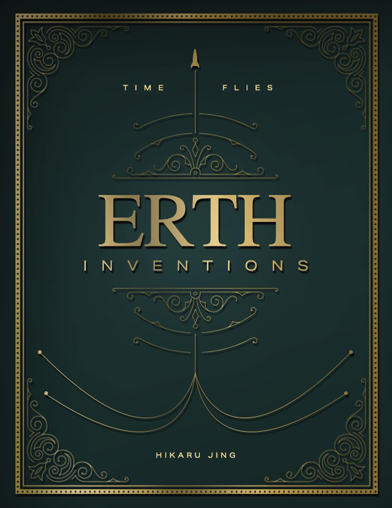

Most people wait for films to exist. We're building one.
Erth Inventions is a sci-fi production in development — and we're assembling a team to bring it to the big screen.
Writers. Artists. Editors. Composers. Actors.
If you can create, you have a place here.
You have ideas. You have skills. Maybe even full scenes in your head.
But no team.
Good people are hard to find. Serious ones are even harder.
Most collaborations fall apart. Messages stop. Deadlines slip. Projects die halfway through.
So nothing gets finished.
The story exists. The world exists. This is not starting from zero.
The device wasn't his. He found it in the rubble of the east quarter, half-buried under scorched metal and something that smelled like old rain. The seams were glowing. That was the first strange thing.
He picked it up because inventors pick things up. It's a reflex, not a decision.
"Hello, Erso," the device said.
That was the second strange thing. He hadn't told it his name.
He sat down on the edge of the fountain wall — not the most dignified response, but an honest one. He looked at the device in his hands. The device looked back at him, seams glowing now, that specific dark orange.
"Tell me everything," he said.
"If I'm supposed to be the best inventor in the known universe," he said, "why hasn't anything I've built actually worked yet?"
"Yet," Anne said.
"That's not an answer."
"It's the most important part of the sentence."
Icalo watched the recording a second time. Then a third.
Anne didn't stop him. She already knew what he would see — had known since the moment it began to play.
She said nothing.

This is not a casual project.
We're building a structured production with real output, real expectations, and a clear goal — to bring Erth Inventions to screen.
If we execute properly, this doesn't stop at a finished video.
It moves toward festivals, distribution, and theatrical release.
We're not looking for people who are "interested."
We're looking for people who can contribute, communicate, and finish what they start.
Skip the process.
If you already have a portfolio, past work, or even a concept for this project — send it directly.
Show what you can do. Show how you think.
That matters more than anything else.